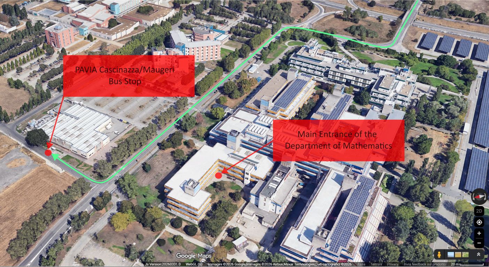
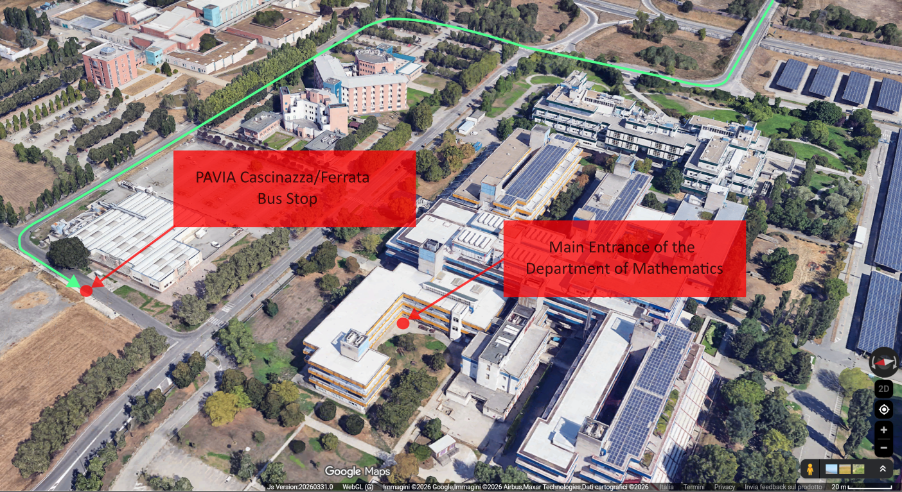

Venue
The workshop will be held at the Department of Mathematics of the University of Pavia, located at Via Ferrata 5, 27100 Pavia (Italy), within the "Polo Scientifico Cravino" campus (colloquially known as "Nave"). Sessions will take place in the "Laboratorio Didattico" room on the ground floor. Upon entering the building through the main entrance, turn left and follow the corridor to the end.
Map
Department Building

How to reach Pavia
By Train
Pavia is well-connected to the Italian railway network. Direct regional and intercity trains from Milan (Centrale, Rogoredo, or Lambrate stations) run frequently and take about 20-30 minutes. You can check schedules and book tickets on the Trenitalia or Trenord websites.
By Plane
If you are flying, Pavia is accessible from the three main airports in the Milan area:
- Linate Airport (LIN): This is the closest airport. You can take the Metro (M4 line) to Milan Dateo station and then a regional train to Pavia.
- Malpensa Airport (MXP): Take the "Malpensa Express" train or a shuttle bus to Milano Centrale or Milano Bovisa stations, and catch a connecting train to Pavia. Total travel time is usually around 1.5 - 2 hours.
- Orio al Serio Airport (BGY - Bergamo): Take a shuttle bus (like Terravision or Orio Shuttle) to Milano Centrale station, then take a train to Pavia. Total travel time is approximately 2 hours.
How to reach the Department of Mathematics
By Bus
We recommend taking bus lines 3 or 7, as they stop closest to the Department of Mathematics. Here is how to reach us:

First suggested option: bus line 3 or 7 (direction "Ist. Maugeri-Mondino")
Get off at the "Cascinazza/Maugeri" stop. The Department of Mathematics is just a 2-minute walk from the bus stop.

Second suggested option: bus line 3 (toward "Via del Colombarone" ),
Get off at the "Cascinazza/Ferrata" stop. The Department of Mathematics is just a 2-minute walk from the bus stop.
On Foot
If you prefer to walk, the Department of Mathematics is a 25-30 minute stroll from the Pavia Train Station. Exit the station, head towards the western side of the city, and follow the signs for the "Polo Cravino" university campus.
By Taxi
Taxis are typically available right outside the main entrance of the Pavia Train Station. The ride to the Department takes about 5-10 minutes, depending on traffic
If you need to book a taxi in advance from your hotel, here are options:
- Radio Taxi Pavia: Call +39 0382 576576 (Main local dispatcher).
- Taxi Radio Pavese: Call +39 0382 577733.
- Taxi Apps: You can use the Uber app to request and pay for local taxis directly from your smartphone.
Extra information
While coffee breaks and lunches are provided by the organizers, you may find these nearby facilities convenient: the café "La Bouvette dell'Ingegnere" inside the Engineering building (adjacent to the Department of Mathematics), and the restaurant/bar at Campus Aquae (a 5-minute walk from the Department).